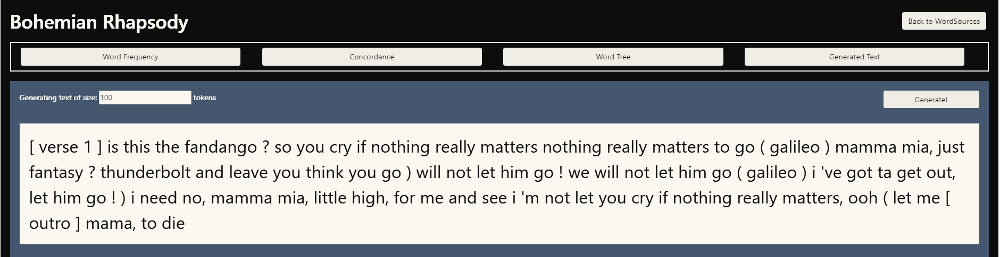

WordSource: A Word and Sentence Structure Visualization
By Winston Cooper
CMPS 161 - Winter 2019
Description:
WordSource is an interactive visualization tool that allows a user to gain insight into
text patterns found in a body of text.
Program Structure
This program processes an uploaded body of text using NLTK and sends it back to the JavaScript to be
drawn as visualizations using D3.js. Each token is parsed and stored in an object for visualization.
A tree is formed where each node's children are the tokens that come directly after it. From
here, we can visualize a tree of every token present within a body of text.
Features
- File upload
- Token Frequency Bar Chart
- Concordance Generator
- Word Tree Visualization
- Text Generation
